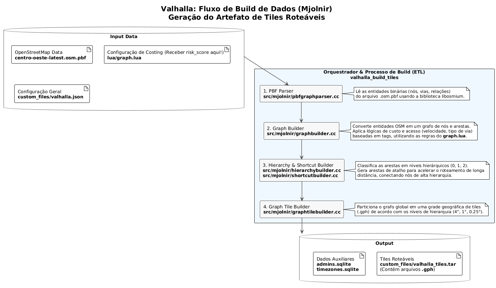
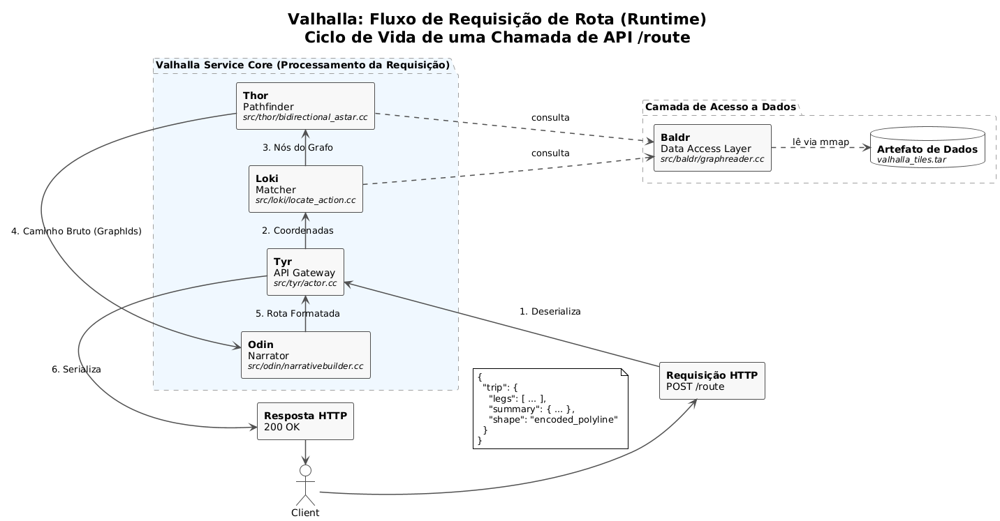

Arquitetura do Sistema
Visão Geral da Arquitetadura
A arquitetura do sistema foi projetada para separar claramente os processos assíncronos de construção de dados dos processos síncronos de consulta em tempo real.
- Plataforma Online: Engloba todos os serviços que interagem diretamente com o usuário em tempo real, como o Frontend, o Backend Orchestrator (ou Load Balancer com NGNIX) e o Cluster de Roteamento Valhalla.
- Pipeline de Dados e Map Builder (Offline): Um conjunto de processos automatizados que rodam em segundo plano. Ele consome dados de fontes externas (OpenStreetMap) e internas (PostGIS com
risk_scores) para gerar os artefatos de mapa enriquecidos que a plataforma online utiliza. - Object Storage (S3, GCS): Atua como a ponte entre os dois ambientes, armazenando os artefatos de mapa versionados para deploy.
Fluxos de Operação
A operação do sistema é dividida em dois fluxos principais e distintos: a alimentação periódica dos dados de risco e a requisição de rotas em tempo real pelo usuário.
Fluxo de Build Periódico (Offline Assíncrono)
Este diagrama detalha o processo automatizado que roda periodicamente (ex: diariamente as 04:00 da manhã ou qualquer horário definido pela equipe) para recriar os mapas do Valhalla, incorporando os risk_scores mais recentes.

Fluxos de Usuário (Online Síncrono)
Este diagrama mostra a sequência de interações para os dois casos de uso principais do usuário: submeter um novo report (que irá alimentar o próximo ciclo de build) e solicitar uma rota segura.

Valhalla
O motor de roteamento open-source Valhalla é o núcleo do serviço de rotas. Seus componentes e o funcionamento dos dados são detalhados a seguir.
Tiles e Hierarquia de Dados
TRADUZIDO DE https://valhalla.github.io/valhalla/tiles/
Um tile (ou bloco) representa uma pequena seção retangular de uma área geográfica. O mapa inteiro é dividido em uma grade de tiles quadrados, que são arquivos em um formato binário específico contendo todas as informações necessárias para o roteamento.
Os tiles são organizados em uma hierarquia de três níveis para otimizar buscas de longa distância:
| Nível de Hierarquia | Tamanho do Tile | Conteúdo Principal |
|---|---|---|
| 0 | 4° | Vias expressas (ex: motorway, trunk) |
| 1 | 1° | Vias arteriais (ex: primary, secondary) |
| 2 | 0.25° | Vias locais (ex: residential, service) |
Em cada nível, o mundo é dividido usando a caixa delimitadora (-180, -90, 180, 90), com a ordenação começando do canto inferior esquerdo.
Visualização
A imagem a seguir mostra a divisão do mundo nos tiles de nível 0.

Abaixo, exemplos de como regiões específicas são cobertas pelos diferentes níveis de tiles (Nível 0: azul, Nível 1: verde, Nível 2: vermelho).
Alemanha

Pensilvânia

Nova Iorque

Componentes Internos do Valhalla
O Valhalla é composto por vários módulos, cada um com uma responsabilidade clara no processo de build e de roteamento.
Mjolnir
Responsabilidade: Converter dados brutos do formato .osm.pbf para os tiles roteáveis do Valhalla. Mjolnir é o "compilador" do mapa que faz o Extraction, Transformation and Loading (ETL).
Localização: src/mjolnir/

O processo, orquestrado pela ferramenta valhalla_build_tiles, segue várias etapas:
- Parsing PBF (
pbfgraphparser.cc): Leitura do arquivo.pbfdo OpenStreetMap, iterando sobre nós, vias e relações. - Construção do Grafo (
graphbuilder.cc): Transformação das entidades OSM em um grafo.- Nós (Nodes): Tornam-se vértices.
- Vias (Ways): Tornam-se arestas (edges). A lógica de custo (velocidade, acesso) é aplicada aqui, configurada via scripts Lua (
/lua/graph.lua). É aqui que orisk_scoreé incorporado como um peso de custo
- Construção da Hierarquia (
hierarchybuilder.cc): Classificação das arestas nos níveis 0, 1 e 2 e geração de "atalhos" (shortcuts) para acelerar a busca. - Particionamento em Tiles (
graphtilebuilder.cc): Divisão do grafo global na grade de tiles (.gph). - Artefato Final: O resultado é um diretório
valhalla_tiles(ouvalhalla_tiles.tar), que é o "binário" de produção.
Baldr: A Camada de Acesso a Dados
Responsabilidade: Definir e fornecer acesso eficiente às estruturas de dados do grafo.
Localização: src/baldr/
- Estrutura do Tile (
graphtile.h): Cada arquivo.gphé um bloco binário com um layout denso para acesso rápido aos dados. GraphId(graphid.h): Umuint64_tque identifica unicamente qualquer nó no grafo global, codificando o ID do tile, o nível da hierarquia e o índice do nó.- Acesso e Memória (
graphreader.cc): Utilizammappara mapear o arquivovalhalla_tiles.tarno espaço de endereço virtual do processo. O sistema operacional gerencia o carregamento de dados do disco para a RAM sob demanda.
Tyr, Loki, Thor e Odin

- Tyr (
src/tyr/): Recebe a requisição HTTP e orquestra o fluxo interno. - Loki (
src/loki/): O serviço de "matching". Converte as coordenadas da requisição (lat, lon) para os nós/arestas correspondentes no grafo ("snap-to-road"). - Thor (
src/thor/): A engine de busca de caminho. Recebe os nós de Loki e executa os algoritmos de roteamento.- Algoritmo (
bidirectional_astar.cc): Utiliza o A* Bidirecional para performance. - Busca Hierárquica: A técnica de otimização que "sobe" para as vias principais para trechos longos e "desce" para as vias locais nas pontas da rota.
- Algoritmo (
- Odin (
src/odin/): O serviço de "narrativa". Converte o caminho bruto (sequência deGraphIds) retornado pelo Thor em instruções de navegação turn-by-turn.
Estratégia de Escalonamento
Matriz de Decisão para Arquiteturas
Pesquisa feita com
Deep Searchdo Gemni 2.5 pro eInvestigardo ChatGPT 4.0/5.0
| Critério | Replicação Monolítica | Sharding Geográfico | Lazy-Loading / Cache Remoto |
|---|---|---|---|
| Tempo de Inicialização | Médio-Alto (1-10 min) Depende do I/O do disco para o mmap inicial. |
Baixo (<2 min) Dataset menor significa inicialização mais rápida. |
Muito Baixo (<10 seg) O custo é transferido para a latência da primeira requisição. |
| Velocidade de Escalonamento | Média Limitada pelo tempo de inicialização. Requer over-provisioning. |
Rápida Pods mais leves permitem que o HPA responda mais agilmente. |
Muito Rápida Escalonamento do compute é desacoplado do dado. |
| Eficiência de CPU/Memória | Alta (se bem dimensionado) O mmap é extremamente otimizado. O "desperdício" é o custo de disco replicado. |
Muito Alta Recursos alocados para a demanda específica de uma região. |
Variável Degradada por I/O de rede; pode criar gargalos no cache remoto. |
| Complexidade Operacional | Baixa Deploy padrão. Artefato único. Load balancing stateless. |
Alta Requer um proxy de roteamento L7 e múltiplos artefatos. |
Muito Alta Requer driver customizado e infra de cache robusta. |
| Isolamento de Falhas | Médio Falha no pod afeta apenas aquele pod. |
Alto Falha é contida no shard daquela região geográfica. |
Baixo Dependência de um serviço de cache/storage centralizado. |
| Roteamento Inter-regional | Nativo e Atômico Performance ótima dentro de um único processo. |
Complexo e Lento Requer costura de resultados entre shards, adicionando latência. |
Nativo (em teoria) Degradado por múltiplas buscas de tiles remotos. |
| Custo em Escala | Médio-Alto Custo principal é o armazenamento em bloco (SSD) replicado. |
Médio Economiza em armazenamento, mas adiciona custo do proxy e de engenharia. |
Potencialmente Baixo (em teoria) Custo de engenharia e da infra de cache pode anular a economia. |
Monolito Replicado com Orquestração
Para cobrir o Brasil e escalar para uma alta carga de requisições, a arquitetura de Replicação Monolítica é a escolha ideal. A complexidade introduzida pelas outras abordagens não justifica seus benefícios, exceto em escala verdadeiramente global.
Justificativa Técnica:
- Evita Falácias de Sistemas Distribuídos: Sharding e Lazy-Loading transformam um problema de computação local em um problema de sistema distribuído, introduzindo latência de rede e complexidade de consistência desnecessariamente.
- Performance Atômica: O
mmapde um arquivo local é uma das operações de I/O mais rápidas possíveis. A transição entre tiles tem latência na ordem de microssegundos a milissegundos, enquanto uma chamada de rede adiciona dezenas a centenas de milissegundos. - Simplicidade Operacional: A simplicidade de gerenciar um único artefato de mapa (enriquecido com
risk_score) e um único tipo de serviço com um load balancer stateless é um benefício imenso em termos de confiabilidade, depuração e velocidade de desenvolvimento.